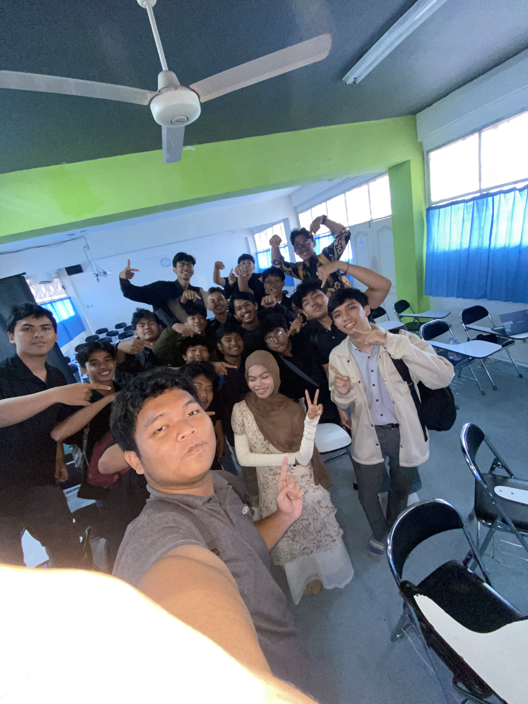
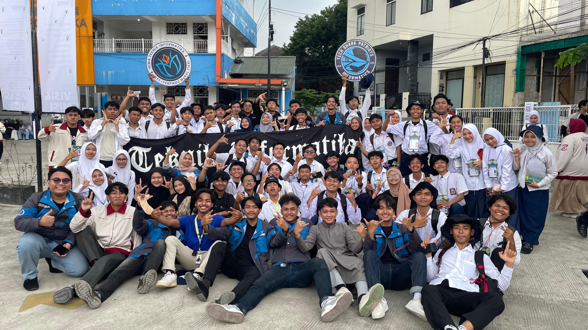
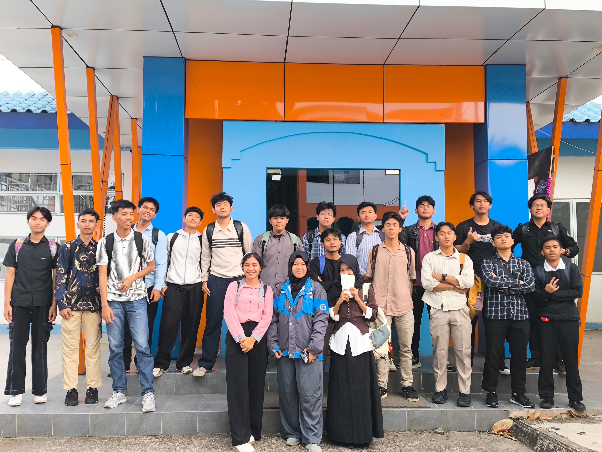

Adli Abdurrahman Syah
- Alamat: Gg. H.Murtadho XIII No.A 135, RT.5/RW.6, Paseban, Kec. Senen,
- Kota Jakarta Pusat, Daerah Khusus Ibukota Jakarta 10440
- Email: abdurrahmansyahadli@gmail.com
- Phone: +62 8978 1472 90
- Tempat, Tanggal Lahir: Jakarta, 12 Agustus 2006
- Pendidikan: S1 Teknik Informatika
Tentang Saya
Saya adalah mahasiswa Teknik Informatika di STT Terpadu Nurul Fikri. Saya mahir bahasa lua dan juga memiliki dasar-dasar python. Di STT Terpadu Nurul Fikri saya belajar HTML5, CSS dan dasar-dasar Python
Video Profile
Galeri Foto


